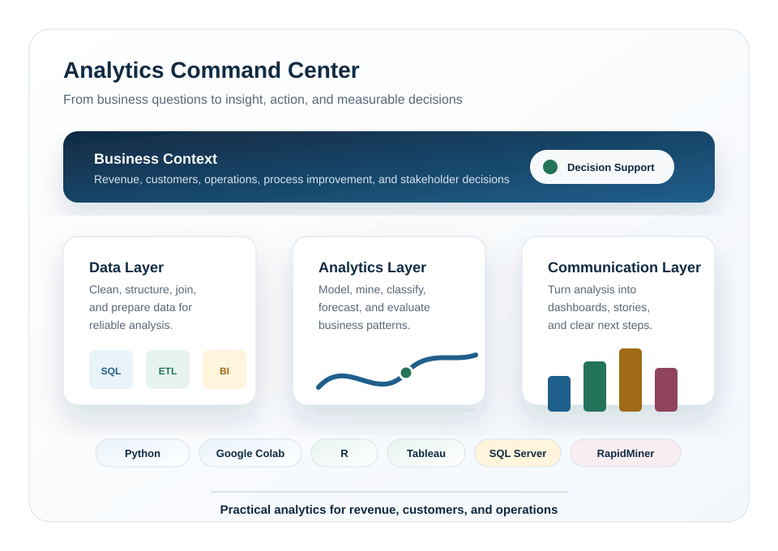

Business Analysis
Translate operational problems into requirements, metrics, process views, and decision-ready recommendations.
Business Analyst - Data Analyst - BI - Sales & Operations Analytics
I connect graduate training in Applied AI & Business Analytics with 8+ years of hands-on experience across retail, manufacturing, sales operations, customer accounts, and business process improvement.

Recruiter snapshot
My strongest fit is with teams that need someone who can understand the business process, work with the data, explain the insight, and help turn analysis into better decisions.
Translate operational problems into requirements, metrics, process views, and decision-ready recommendations.
Clean, analyze, model, and interpret business data using Python, R, SQL, Excel, Google Colab, and statistical methods.
Build reporting logic, dashboards, visual summaries, and stakeholder-facing insights for recurring decisions.
Connect revenue, customer behavior, fulfillment, and operations data to improve performance and efficiency.
Featured analytics case studies
A focused selection of graduate analytics work showing how I define a problem, choose a method, build the analysis, and translate findings into decision-ready business value.
Built a predictive analytics workflow for a PVC piping manufacturing sales dataset to identify high-revenue transactions, compare model performance, and translate model results into sales targeting recommendations.
Business value: supports high-value opportunity identification, sales prioritization, and better use of customer/order data.
Notebook, model results, and short project report will be linked here after public review.
Used text mining to study how Twitter conversations changed across time around net neutrality and climate-change announcements, focusing on topic evolution, public sentiment signals, and recurring themes in online discourse.
Business value: demonstrates how organizations can monitor public conversation, policy reaction, and stakeholder sentiment at scale.
Presentation slides and text-mining summary outputs will be linked here after public review.
Designed and implemented a SQL Server data warehouse for an insurance case company, using shared dimensions and multiple fact tables to support profitability, claims, fraud, specialty coverage, and driver-risk analysis.
Business value: demonstrates how database design can support reporting, risk analysis, compliance, and executive decision-making.
Warehouse report, schema notes, and SQL evidence will be linked here after public review.
Built Tableau visualizations from a county-level health access dataset to compare provider availability, uninsured rates, and preventable hospitalization patterns across U.S. counties and states.
Business value: demonstrates how Tableau can turn public-sector data into clearer decisions about access, risk, and resource gaps.
Open the live Tableau Public dashboard or view the packaged Tableau workbook files used while building the county healthcare access analysis.
Additional projects
Compact evidence libraries for additional coursework projects. These stay separate from the featured case studies so recruiters can scan the main portfolio first and explore more course-specific work when useful.
Quinnipiac graduate coursework completed with A grades across Spring 2025, Fall 2025, and Spring 2026. The courses below show the technical and analytical base behind my Business Analyst, Data Analyst, BI, and Sales/Operations Analytics positioning.
Turned unstructured text into usable business evidence through document mining and text-based modeling.
Built Python foundations for data acquisition, cleaning, exploratory analysis, and reproducible workflows.
Learned how managers frame analytical problems and use evidence to support better business decisions.
Applied predictive analytics to business datasets for forecasting, classification, and performance support.
Used R to import, manage, analyze, and document data in a statistical programming environment.
Connected machine learning, predictive modeling, ethics, and communication to business decisions.
Designed and managed operational and analytical databases for reporting and decision support.
Applied data mining methods to business problems involving segmentation, recommendations, and insight discovery.
Designed visual analysis and dashboards that make quantitative and qualitative data easier to act on.
Skills developed
Across 27 completed graduate credits, I have earned A grades while building a practical analytics toolkit for data-driven business decision-making.
Predictive modeling, statistical analysis, machine learning, data mining, clustering, association rules, customer segmentation, recommendation analytics.
SQL, SQL Server, Python, Google Colab, R/RStudio, Excel, SAS Enterprise Guide, SAS Enterprise Miner Text Miner, RapidMiner / Altair AI Studio.
Tableau, dashboarding, data cleaning, database design, ETL, data warehousing, dimensional modeling, business reporting.
Operations analytics, revenue analysis, CRM insights, stakeholder communication, process improvement, decision support.
Open to analyst opportunities
I am seeking roles where I can combine analytics training, business experience, and structured communication to improve decisions, efficiency, and growth.